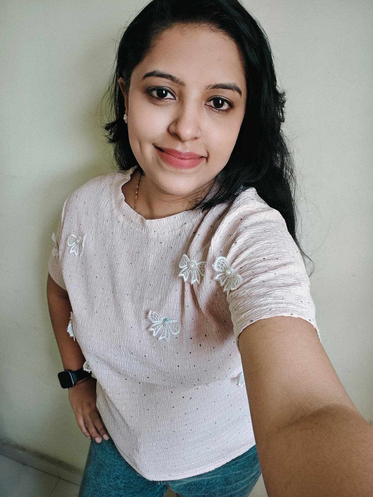

Passionate about uncomplicating nutrition and helping individuals create a sustainable, disease-free, and energetic life.

Dr. Mrunali Kasar" style="width: 100%; height: auto; object-fit: cover; display: block;">With over 12+ years of experience in the clinical field as a doctor, I believe that achieving health is not about extreme diets or punishing routines. It's about finding consistency, understanding your body's unique requirements, and healing from within using food as the ultimate medicine.
My approach bridges the gap between traditional wisdom and modern nutritional science. I have successfully guided hundreds of clients through complex lifestyle disorders, gut issues, and metabolic syndrome conditions.
I focus on habit building and sustainable lifestyle modifications that stay with you long after the consultation period is over.
Graduated with top honors, specializing in dietary management for clinical conditions and holistic wellness approaches.
Gained specialized certification to assist patients in managing and reversing Type 2 Diabetes through targeted nutrition.
Started private practice consulting clients globally, focusing on PCOD, thyroid, gut health, and sustainable fat loss.